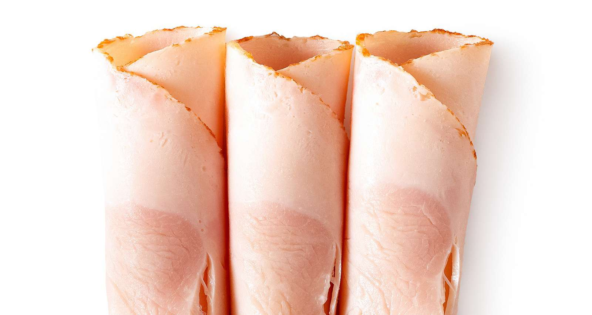

Shawn's Late Night Turkey Rollups

Description
One of my favorite quick and easy late night snacks, when I just need a little something extra in the belly. Basically just a turkey sandwich, in breadless form.
Feel free to innovate and change out any of the seasonings used for whatever you prefer! I'll say in parentheses in the ingredient list what I specifically use for some of the ingredients, but any general thing will work.
Ingredients
- 2 slices deli meat turkey (I prefer sun dried tomato turkey)
- 2 slices Swiss cheese
- Mayonnaise (I use olive oil mayo for a hint of extra flavor)
- Ground black pepper
- Kosher salt
- Garlic powder
- Hot sauce (My favorite is Bravado Spice Creamy Herb and Jalepeno)
Instructions
- Lay Swiss cheese flat.
- Spread mayonnaise on cheese.
- Layer turkey on top of cheese.
- Add seasonings to taste (be sure to cover the turkey well so you don't miss any in a bite).
- Add hot sauce in a line at one end of the turkey (perpendicular to the long edge).
- Roll up cheese and turkey, starting with the short edge the hot sauce is along.
- Enjoy your easy late night snack!
Return to main